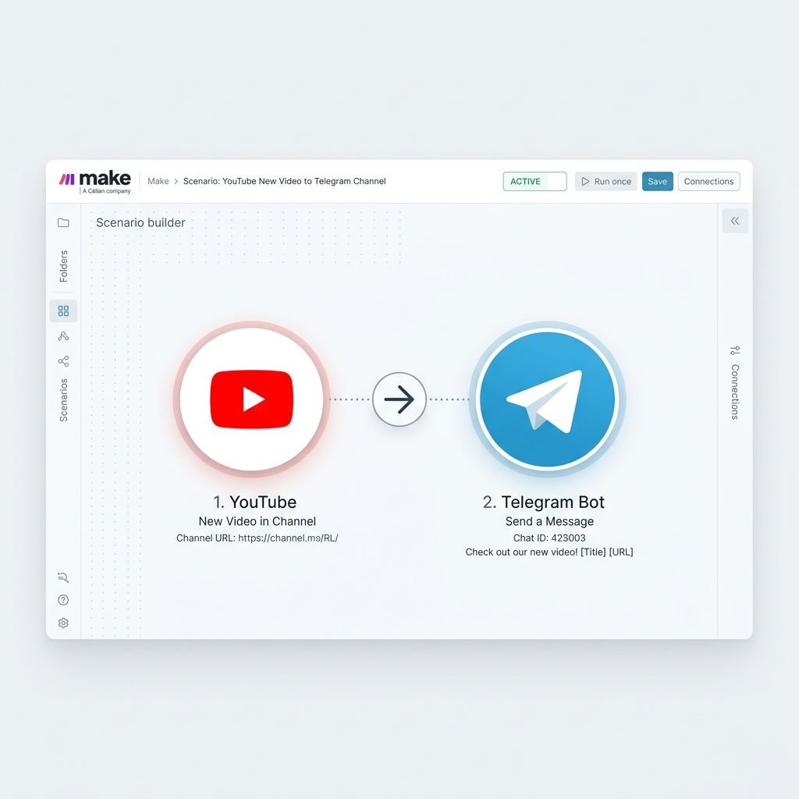
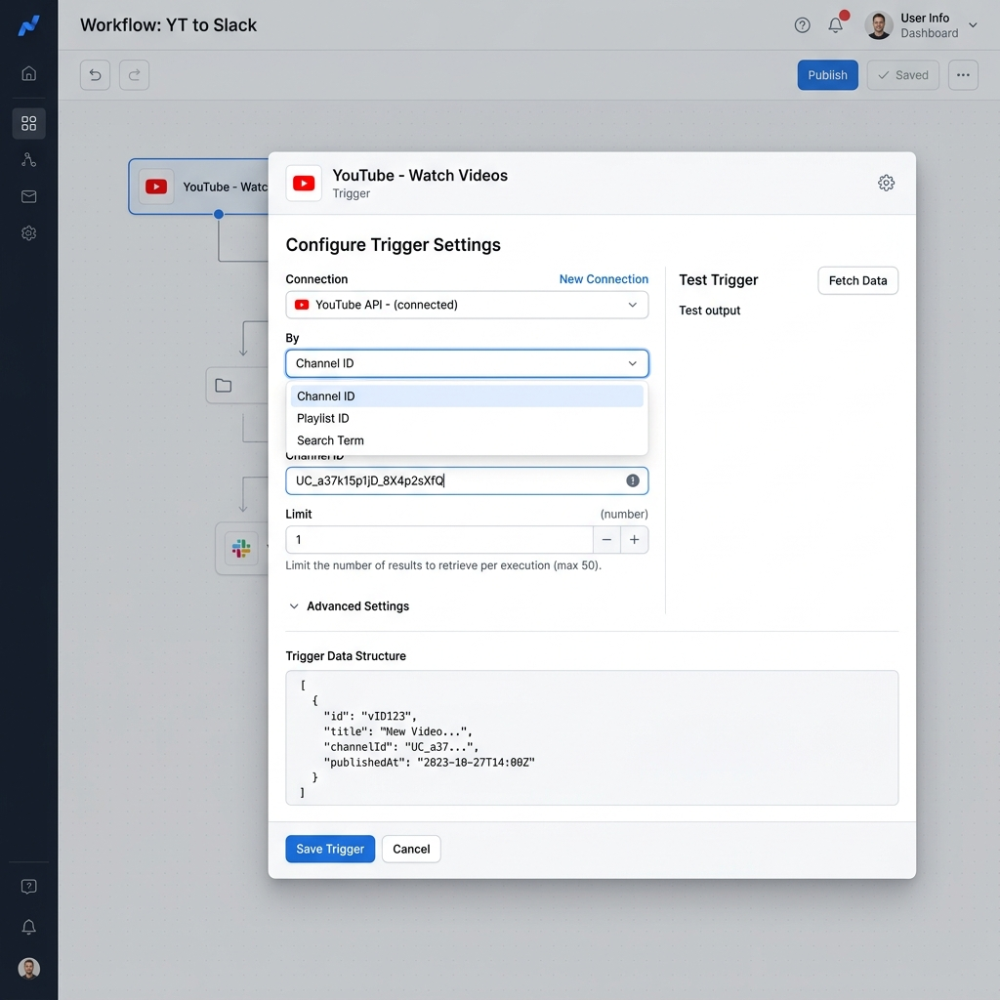
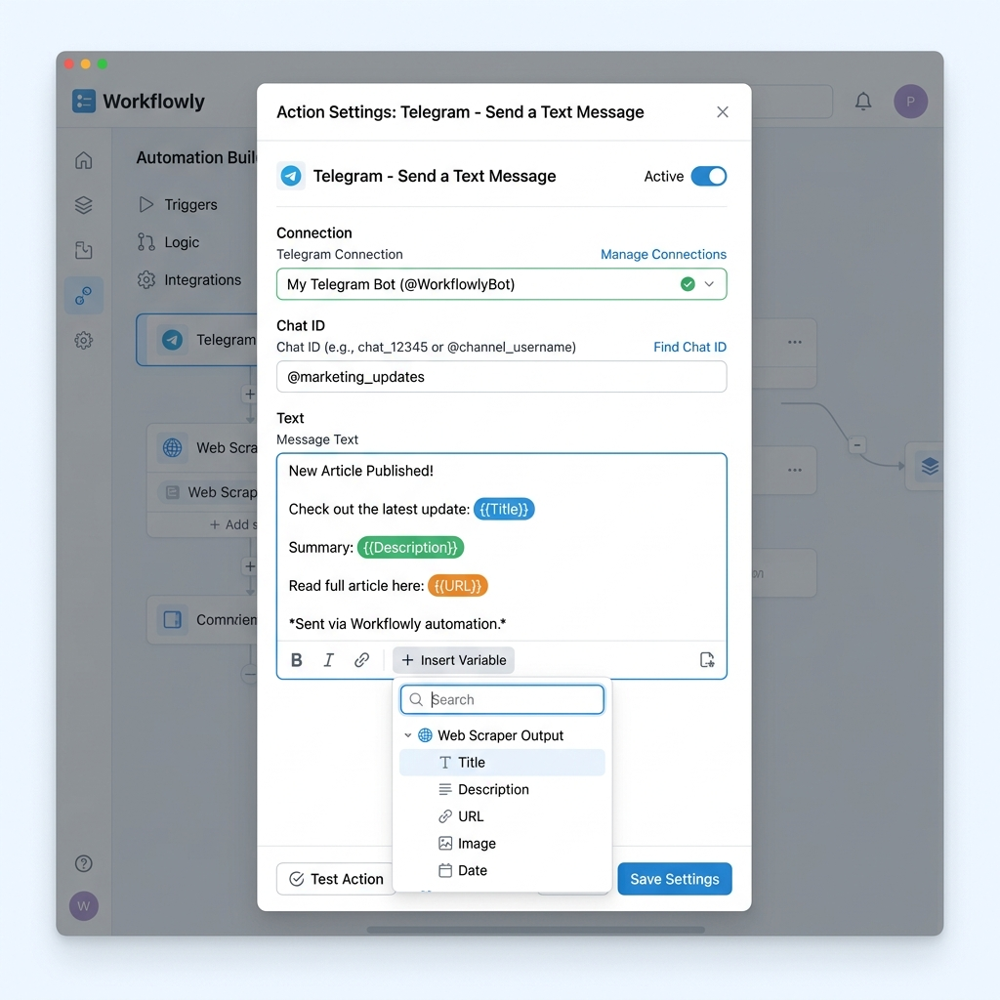

Visión General del Escenario
Como experto en Make (anteriormente Integromat), he diseñado la lógica perfecta para tu escenario. Este flujo te permitirá recibir notificaciones automáticas en Telegram cada vez que se suba un nuevo video a un canal de YouTube específico.

1
Configurar el Trigger de YouTube
El primer paso es indicarle a Make que vigile un canal específico. Para esto usaremos el módulo de YouTube.
- Añade un nuevo módulo y busca YouTube.
- Selecciona el trigger: Watch videos.
- Configuración del módulo:
- Connection: Conecta tu cuenta de Google/YouTube si aún no lo has hecho.
- Watch: Selecciona
By Channel ID. - Channel ID: Ingresa el ID del canal que deseas monitorear.
- Limit: Configúralo en
1o2(1 es ideal para notificaciones en tiempo real).
💡 TIP: Al configurar este módulo por primera vez, Make te preguntará desde cuándo quieres empezar a observar. Te sugiero seleccionar "From now on" (A partir de ahora) para no recibir notificaciones de videos viejos.

2
Configurar la Acción de Telegram
Ahora, tomaremos la información que Make recolectó del video y la enviaremos a tu Telegram.
- Añade un segundo módulo conectado al de YouTube y busca Telegram Bot.
- Selecciona la acción: Send a Text Message or Reply.
- Configuración del módulo:
- Connection: Crea una conexión añadiendo el Token de tu bot de Telegram.
- Chat ID: Ingresa tu ID de chat personal, o el ID del grupo/canal.
- Text: Vamos a mapear las variables que vienen del módulo de YouTube para estructurar el mensaje.
- Parse Mode: Es crucial seleccionar
HTMLoMarkdown.
📝 Estructura del Mensaje (HTML)
🚨 <b>¡NUEVO VIDEO DISPONIBLE!</b> 🚨
<b>🎬 Título:</b> {{1.title}}
<b>📝 Descripción:</b>
<i>{{1.description}}</i>
👉 <a href="{{1.url}}"><b>HAZ CLIC AQUÍ PARA VERLO</b></a>
3
Frecuencia de Ejecución
Has mencionado el objetivo de asegurar que el flujo sea instantáneo. Es importante entender cómo funciona Make:
⚠️ IMPORTANTE: El módulo 'Watch videos' de YouTube es un trigger de tipo Polling (búsqueda periódica), no un Webhook (notificación push instantánea).
Esto significa que Make revisará el canal cada cierto tiempo. Para lograr que sea lo más cercano a "instantáneo":
- Ve al ícono del reloj ⏱️ en la parte inferior izquierda de tu escenario (Schedule setting).
- Si tienes una cuenta de pago de Make, puedes configurarlo para que se ejecute cada 1 minuto.
- Si tienes una cuenta gratuita, el mínimo permitido son 15 minutos.
- ¡Asegúrate de encender el interruptor de
ONen la parte inferior izquierda para activar el escenario!
✨ Resumen de Verificación
- ✓ El bot de Telegram debe haber iniciado conversación.
- ✓ El Chat ID debe ser correcto.
- ✓ El link está correctamente formateado en HTML.